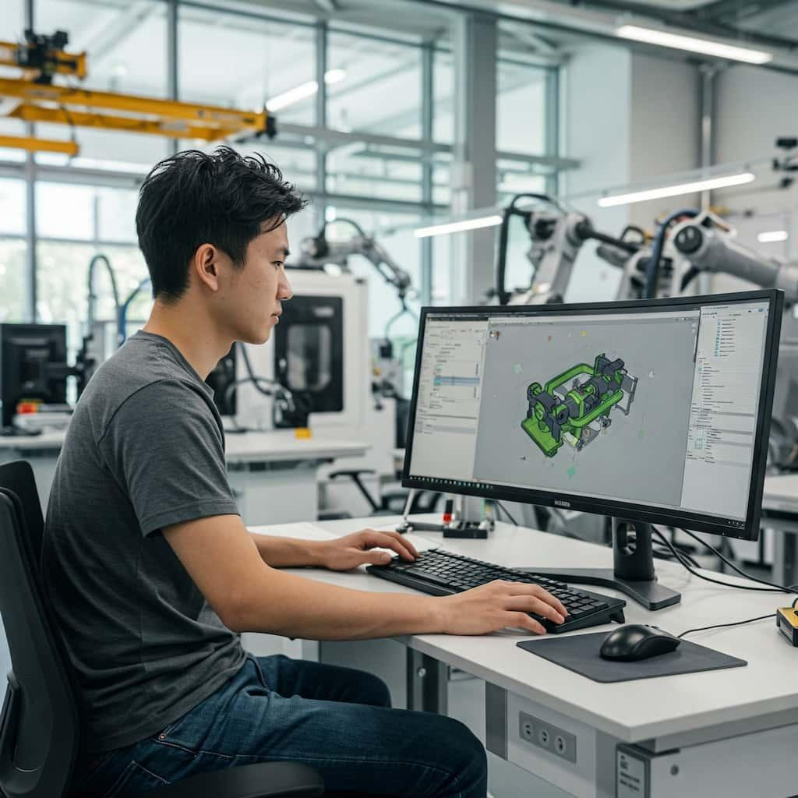

Vertical 01: Education & innovation
Engineering Academy & Project Lab
Engineering subjects, CAD/CAM, simulation, research, prototyping and project development.
- Engineering Subjects Academy
- CAD/CAM & Engineering Simulation
- Engineering Projects & Prototyping
- Research & Thesis Mentoring
- Technical Writing & Editing
For: Engineering students, researchers and colleges
Explore Academy & Project Lab